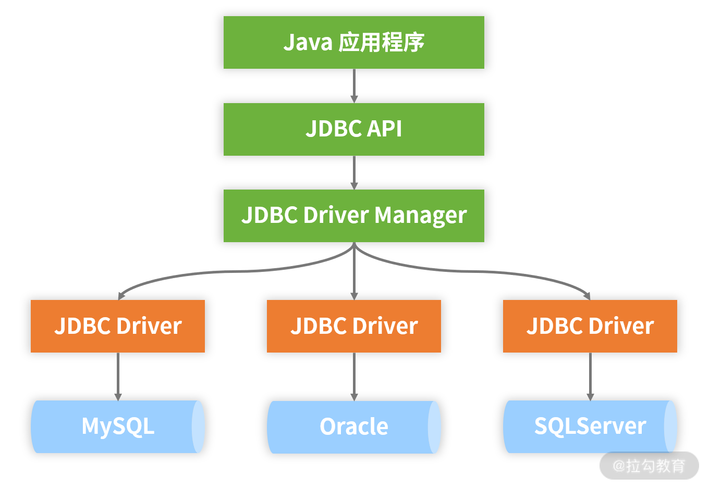
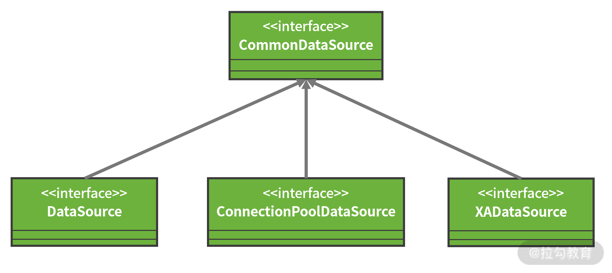
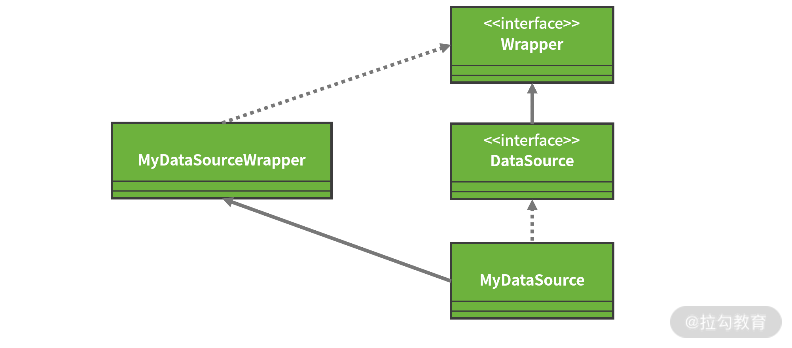
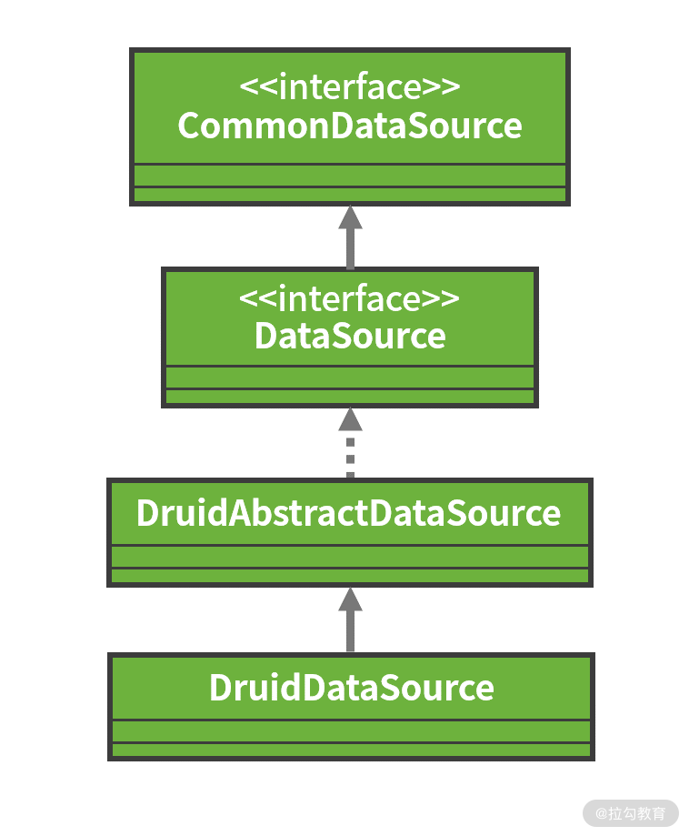
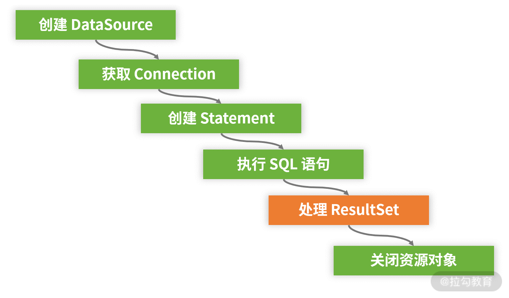

- 00 开篇词 从零开始：为什么要学习 Spring Boot？.md.html
- 01 家族生态：如何正确理解 Spring 家族的技术体系？.md.html
- 02 案例驱动：如何剖析一个 Spring Web 应用程序？.md.html
- 03 多维配置：如何使用 Spring Boot 中的配置体系？.md.html
- 04 定制配置：如何创建和管理自定义的配置信息？.md.html
- 05 自动配置：如何正确理解 Spring Boot 自动配置实现原理？.md.html
- 06 基础规范：如何理解 JDBC 关系型数据库访问规范？.md.html
- 07 数据访问：如何使用 JdbcTemplate 访问关系型数据库？.md.html
- 08 数据访问：如何剖析 JdbcTemplate 数据访问实现原理？.md.html
- 09 数据抽象：Spring Data 如何对数据访问过程进行统一抽象？.md.html
- 10 ORM 集成：如何使用 Spring Data JPA 访问关系型数据库？.md.html
- 11 服务发布：如何构建一个 RESTful 风格的 Web 服务？.md.html
- 12 服务调用：如何使用 RestTemplate 消费 RESTful 服务？.md.html
- 13 服务调用：如何正确理解 RestTemplate 远程调用实现原理？.md.html
- 14 消息驱动：如何使用 KafkaTemplate 集成 Kafka？.md.html
- 15 消息驱动：如何使用 JmsTemplate 集成 ActiveMQ？.md.html
- 16 消息驱动：如何使用 RabbitTemplate 集成 RabbitMQ？.md.html
- 17 安全架构：如何理解 Spring 安全体系的整体架构？.md.html
- 18 用户认证：如何基于 Spring Security 构建用户认证体系？.md.html
- 19 服务授权：如何基于 Spring Security 确保请求安全访问？.md.html
- 20 服务监控：如何使用 Actuator 组件实现系统监控？.md.html
- 21 指标定制：如何实现自定义度量指标和 Actuator 端点？.md.html
- 22 运行管理：如何使用 Admin Server 管理 Spring 应用程序？.md.html
- 23 数据测试：如何使用 Spring 测试数据访问层组件？.md.html
- 24 服务测试：如何使用 Spring 测试 Web 服务层组件？.md.html
- 结束语 以终为始：Spring Boot 总结和展望.md.html
06 基础规范：如何理解 JDBC 关系型数据库访问规范？
从今天开始，我们将进入 Spring Boot 另一个核心技术体系的讨论，即数据访问技术体系。无论是互联网应用还是传统软件，对于任何一个系统而言，数据的存储和访问都是不可缺少的。
数据访问层的构建可能会涉及多种不同形式的数据存储媒介，本课程关注的是最基础也是最常用的数据存储媒介，即关系型数据库，针对关系型数据库，Java 中应用最广泛的就是 JDBC 规范，今天我们将对这个经典规范展开讨论。
JDBC 是 Java Database Connectivity 的全称，它的设计初衷是提供一套能够应用于各种数据库的统一标准，这套标准需要不同数据库厂家之间共同遵守，并提供各自的实现方案供 JDBC 应用程序调用。
作为一套统一标准，JDBC 规范具备完整的架构体系，如下图所示：

JDBC 规范整体架构图
从上图中可以看到，Java 应用程序通过 JDBC 所提供的 API 进行数据访问，而这些 API 中包含了开发人员所需要掌握的各个核心编程对象，下面我们一起来看下。
JDBC 规范中有哪些核心编程对象？
对于日常开发而言，JDBC 规范中的核心编程对象包括 DriverManger、DataSource、Connection、Statement，及 ResultSet。
DriverManager
正如前面的 JDBC 规范整体架构图中所示，JDBC 中的 DriverManager 主要负责加载各种不同的驱动程序（Driver），并根据不同的请求向应用程序返回相应的数据库连接（Connection），应用程序再通过调用 JDBC API 实现对数据库的操作。
JDBC 中的 Driver 定义如下，其中最重要的是第一个获取 Connection 的 connect 方法：
public interface Driver {
//获取数据库连接
Connection connect(String url, java.util.Properties info)
throws SQLException;
boolean acceptsURL(String url) throws SQLException;
DriverPropertyInfo[] getPropertyInfo(String url, java.util.Properties info)
throws SQLException;
int getMajorVersion();
int getMinorVersion();
boolean jdbcCompliant();
public Logger getParentLogger() throws SQLFeatureNotSupportedException;
}
针对 Driver 接口，不同的数据库供应商分别提供了自身的实现方案。例如，MySQL 中的 Driver 实现类如下代码所示：
public class Driver extends NonRegisteringDriver implements java.sql.Driver {
// 通过 DriverManager 注册 Driver
static {
try {
java.sql.DriverManager.registerDriver(new Driver());
} catch (SQLException E) {
throw new RuntimeException("Can't register driver!");
}
}
…
}
这里就使用用了 DriverManager，而 DriverManager 除提供了上述用于注册 Driver 的 registerDriver 方法之外，还提供了 getConnection 方法用于针对具体的 Driver 获取 Connection 对象。
DataSource
通过前面的介绍，我们知道在 JDBC 规范中可直接通过 DriverManager 获取 Connection，我们也知道获取 Connection 的过程需要建立与数据库之间的连接，而这个过程会产生较大的系统开销。
为了提高性能，通常我们首先会建立一个中间层将 DriverManager 生成的 Connection 存放到连接池中，再从池中获取 Connection。
而我们可以认为 DataSource 就是这样一个中间层，它作为 DriverManager 的替代品而推出，是获取数据库连接的首选方法。
DataSource 在 JDBC 规范中代表的是一种数据源，核心作用是获取数据库连接对象 Connection。在日常开发过程中，我们通常会基于 DataSource 获取 Connection。DataSource 接口的定义如下代码所示：
public interface DataSource extends CommonDataSource, Wrapper {
Connection getConnection() throws SQLException;
Connection getConnection(String username, String password)
throws SQLException;
}
从上面我们可以看到，DataSource 接口提供了两个获取 Connection 的重载方法，并继承了 CommonDataSource 接口。CommonDataSource 是 JDBC 中关于数据源定义的根接口，除了 DataSource 接口之外，它还有另外两个子接口，如下图所示：

DataSource 类层结构图
其中，DataSource 是官方定义的获取 Connection 的基础接口，XADataSource 用来在分布式事务环境下实现 Connection 的获取，而 ConnectionPoolDataSource 是从连接池 ConnectionPool 中获取 Connection 的接口。
所谓的 ConnectionPool 相当于预先生成一批 Connection 并存放在池中，从而提升 Connection 获取的效率。
请注意 DataSource 接口同时还继承了一个 Wrapper 接口。从接口的命名上看，我们可以判断该接口起到一种包装器的作用。事实上，因为很多数据库供应商提供了超越标准 JDBC API 的扩展功能，所以 Wrapper 接口可以把一个由第三方供应商提供的、非 JDBC 标准的接口包装成标准接口。
以 DataSource 接口为例，如果我们想自己实现一个定制化的数据源类 MyDataSource，就可以提供一个实现了 Wrapper 接口的 MyDataSourceWrapper 类来完成包装和适配，如下图所示：

通过 Wrapper 接口扩展 JDBC 规范示意图
在 JDBC 规范中，除了 DataSource 之外，Connection、Statement、ResultSet 等核心对象也都继承了这个 Wrapper 接口。
作为一种基础组件，它同样不需要开发人员自己实现 DataSource，因为业界已经存在了很多优秀的实现方案，如 DBCP、C3P0 和 Druid 等。
例如 Druid 提供了 DruidDataSource，它不仅提供了连接池的功能，还提供了诸如监控等其他功能，它的类层结构如下图所示：

DruidDataSource 的类层结构
Connection
DataSource 的目的是获取 Connection 对象。我们可以把 Connection 理解为一种会话（Session）机制，Connection 代表一个数据库连接，负责完成与数据库之间的通信。
所有 SQL 的执行都是在某个特定 Connection 环境中进行的，同时它还提供了一组重载方法分别用于创建 Statement 和 PreparedStatement。另一方面，Connection 也涉及事务相关的操作。
Connection 接口中定义的方法很丰富，其中最核心的几个方法如下代码所示：
public interface Connection extends Wrapper, AutoCloseable {
//创建 Statement
Statement createStatement() throws SQLException;
//创建 PreparedStatement
PreparedStatement prepareStatement(String sql) throws SQLException;
//提交
void commit() throws SQLException;
//回滚
void rollback() throws SQLException;
//关闭连接
void close() throws SQLException;
}
这里涉及具体负责执行 SQL 语句的 Statement 和 PreparedStatement 对象，我们接着往下看。
Statement/PreparedStatement
JDBC 规范中的 Statement 存在两种类型，一种是普通的 Statement，一种是支持预编译的 PreparedStatement。
所谓预编译，是指数据库的编译器会对 SQL 语句提前编译，然后将预编译的结果缓存到数据库中，下次执行时就可以通过替换参数并直接使用编译过的语句，从而大大提高 SQL 的执行效率。
当然，这种预编译也需要一定成本，因此在日常开发中，如果对数据库只执行一次性读写操作时，用 Statement 对象进行处理会比较合适；而涉及 SQL 语句的多次执行时，我们可以使用 PreparedStatement。
如果需要查询数据库中的数据，我们只需要调用 Statement 或 PreparedStatement 对象的 executeQuery 方法即可。
这个方法以 SQL 语句作为参数，执行完后返回一个 JDBC 的 ResultSet 对象。当然，Statement 或 PreparedStatement 还提供了一大批执行 SQL 更新和查询的重载方法，我们无意一一展开。
以 Statement 为例，它的核心方法如下代码所示：
public interface Statement extends Wrapper, AutoCloseable {
//执行查询语句
ResultSet executeQuery(String sql) throws SQLException;
//执行更新语句
int executeUpdate(String sql) throws SQLException;
//执行 SQL 语句
boolean execute(String sql) throws SQLException;
//执行批处理
int[] executeBatch() throws SQLException;
}
这里我们同样引出了 JDBC 规范中最后一个核心编程对象，即代表执行结果的 ResultSet。
ResultSet
一旦我们通过 Statement 或 PreparedStatement 执行了 SQL 语句并获得了 ResultSet 对象，就可以使用该对象中定义的一大批用于获取 SQL 执行结果值的工具方法，如下代码所示：
public interface ResultSet extends Wrapper, AutoCloseable {
//获取下一个结果
boolean next() throws SQLException;
//获取某一个类型的结果值
Value getXXX(int columnIndex) throws SQLException;
…
}
ResultSet 提供了 next() 方法便于开发人员实现对整个结果集的遍历。如果 next() 方法返回为 true，意味着结果集中存在数据，可以调用 ResultSet 对象的一系列 getXXX() 方法来取得对应的结果值。
如何使用 JDBC 规范访问数据库？
对于开发人员而言，JDBC API 是我们访问数据库的主要途径，如果我们使用 JDBC 开发一个访问数据库的执行流程，常见的代码风格如下所示（省略了异常处理）：
// 创建池化的数据源
PooledDataSource dataSource = new PooledDataSource ();
// 设置 MySQL Driver
dataSource.setDriver ("com.mysql.jdbc.Driver");
// 设置数据库 URL、用户名和密码
dataSource.setUrl ("jdbc:mysql://localhost:3306/test");
dataSource.setUsername("root");
dataSource.setPassword("root");
// 获取连接
Connection connection = dataSource.getConnection();
// 执行查询
PreparedStatement statement = connection.prepareStatement ("select * from user");
// 获取查询结果进行处理
ResultSet resultSet = statement.executeQuery();
while (resultSet.next()) {
…
}
// 关闭资源
statement.close();
resultSet.close();
connection.close();
这段代码中完成了对基于前面介绍的 JDBC API 中的各个核心编程对象的数据访问。上述代码主要面向查询场景，而针对用于插入数据的处理场景，我们只需要在上述代码中替换几行代码，即将“执行查询”和“获取查询结果进行处理”部分的查询操作代码替换为插入操作代码就行。
最后，我们梳理一下基于 JDBC 规范进行数据库访问的整个开发流程，如下图所示：

基于 JDBC 规范进行数据库访问的开发流程图
针对前面所介绍的代码示例，我们明确地将基于 JDBC 规范访问关系型数据库的操作分成两大部分：一部分是准备和释放资源以及执行 SQL 语句，另一部分则是处理 SQL 执行结果。
而对于任何数据访问而言，前者实际上都是重复的。在上图所示的整个开发流程中，事实上只有“处理 ResultSet ”部分的代码需要开发人员根据具体的业务对象进行定制化处理。这种抽象为整个执行过程提供了优化空间。诸如 Spring 框架中 JdbcTemplate 这样的模板工具类就应运而生了，我们会在 07 讲中会详细介绍这个模板工具类。
小结与预告
JDBC 规范是 Java EE 领域中进行数据库访问的标准规范，在业界应用非常广泛。今天的课程中，我们分析了该规范的核心编程对象，并梳理了使用 JDBC 规范访问数据库的开发流程。希望你能熟练掌握这部分知识，因为熟练掌握 JDBC 规范是我们理解后续内容的基础。